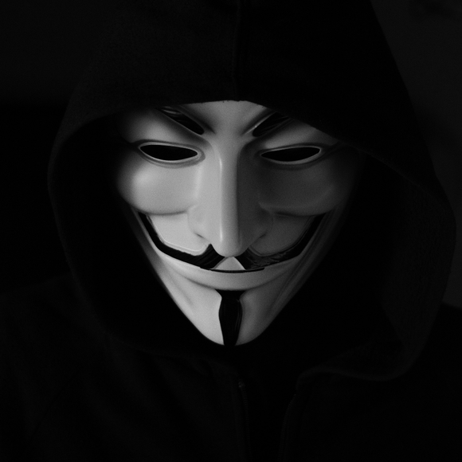

Tokenomics
5% asset backing, 5% reflections, 5% Smart Rising Price Floor.
1/3 Liquidity.
1/3 Burnt.
1/3 in a
contract where reflections will
be used to buy and burn SD Projects.
UPDATE:
Was busy there for awhile and away.
Looks like the faucet was taken care of.
Yes, Blindragon, tried to help increase the backing.
Strong Community! Keep it up.
FVKSOROS was made for the community.
FVKALLSCAMMERS.
Not made by DEGEN, Not made by FEG. #FEGanon
